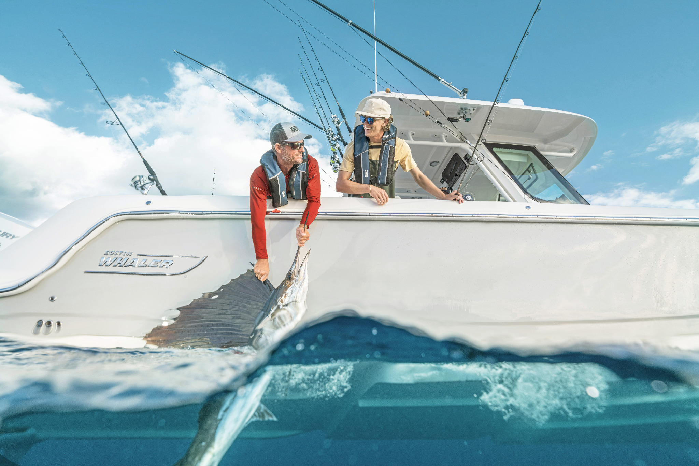
Boston Whaler — Brand Evolution & Launch Work
01Early brand-refresh exploration followed by independently led launch creative for the 330 and 290 Outrage.
A multidisciplinary designer working across brand strategy, campaign systems, digital marketing and visual experience design for marine and lifestyle brands.

Early brand-refresh exploration followed by independently led launch creative for the 330 and 290 Outrage.

A full-funnel product launch system positioning the SLX 360 Outboard as a confident expression of modern luxury across social, email and web.

Repositioning a utility hunting boat through a modern campaign system rooted in trust, authenticity and the hunting mindset.

Turning a forgettable two-letter product name into a flexible lifestyle narrative built around summer, access and belonging.

A packaging exploration focused on creating a coherent family across multiple beauty products. Hierarchy, color coding and graphic repetition help each item remain individually recognizable while preserving a consistent shelf presence.

A tactile identity system built around collectible embroidered patches. The work balances a utilitarian visual language with playful object-based storytelling, allowing the brand to live consistently across physical merchandise, labels and graphic applications.

A restrained luxury identity for an independent hair salon. The system uses refined typography, a controlled neutral palette and editorial composition to communicate confidence and craft without relying on conventional beauty-industry ornament.

A warm, contemporary café identity informed by Korean visual culture and the intimacy of a neighborhood gathering place. The system combines a flexible wordmark, friendly graphic devices and tactile applications across signage, packaging and motion.

A personal illustration series exploring character, atmosphere and visual storytelling. The work uses simplified form, deliberate color relationships and editorial framing to turn everyday school moments into expressive narrative scenes.

A precise, technical identity for a dental laboratory. The visual system translates accuracy, material expertise and clinical reliability into a clean brand language that can function across professional communication and operational touchpoints.

A senior capstone UI/UX project exploring how a clearer mobile transit experience could reduce uncertainty around bus arrival and trip planning.
A photography archive will be added here.
This section will be updated with selected photography projects.
Open to read more about my background, approach and experience.
I’m a multidisciplinary designer currently working at Brunswick Corporation, where I create launch campaigns, digital experiences and brand communications across marine brands including Sea Ray, Boston Whaler, Harris, Lowe and Lund.
My practice is grounded in storytelling, visual systems and brand experience. I’m especially interested in how strategy, emotion and clear communication can shape more memorable creative work across campaigns and customer touchpoints.
This portfolio includes professional work alongside selected independent and academic projects.
An integrated launch campaign for the all-new Sea Ray SLX 360 Outboard, translated into a disciplined visual system across social, email and web.
The SLX 360 Outboard launch needed to communicate performance, comfort and design in a voice that felt unmistakably Sea Ray. The campaign had to remain elevated while adapting across formats with very different content demands.
Black editorial fields, precise typography and cinematic boating photography create a premium framework. Benefit-led messages such as “Power can have pulse” and “Comfort can be commanding” transform product attributes into concise emotional statements.


Each touchpoint uses the same core ingredients with a channel-specific hierarchy. Social emphasizes pacing and discovery, Stories deliver immediate benefit-led messages, email supports deeper consideration and the web hero establishes the launch at a glance.
A product launch and campaign system designed to modernize Lowe Roughneck without losing the credibility it had earned with hunters and anglers.
Lowe had built a strong reputation around reliable, affordable aluminum boats. Yet the existing creative direction felt dated and increasingly disconnected from younger, lifestyle-driven hunters. The opportunity was not to make the brand louder, but to make it feel more relevant and emotionally credible.
Hunters don’t just buy boats. They buy trust.
Competitive analysis showed a category crowded with toughness, tradition and feature claims. Lowe could differentiate by demonstrating that the brand understood the hunter’s mindset, environment and need for equipment that feels dependable rather than performative.
The campaign concept, “Hidden in Plain Sight,” drew from the new Mossy Oak camouflage patterns and reframed camouflage as a symbol of intelligence, precision and belonging. The visual system paired organic camouflage fields with disciplined typography and direct messaging.
I reviewed the visual conventions, messaging patterns and positioning used across competing aluminum hunting and fishing brands. The analysis revealed a category dominated by toughness claims, heritage cues and functional feature language, creating an opportunity for Lowe to feel more contemporary without losing credibility.

The mood board established the campaign’s tone before execution: swamp-inspired color, environmental texture, camouflage integration, restrained typography and imagery that felt authentic to the hunting experience rather than staged.


The campaign elevated Lowe’s visual perception while retaining its affordability and authenticity. “Hidden in Plain Sight” also established a reusable creative theme for future hunting-focused communication within the Lowe brand family.
Transforming LS from a forgettable alphanumeric product name into an emotionally flexible lifestyle platform.

The value pontoon category was dominated by either dry specification-led messaging or aspirational luxury. LS had the chance to occupy the space between them: stylish, social and attainable. The problem was that the name itself carried no emotional meaning.
People weren’t asking for another pontoon name. They wanted more reasons to get on the water.
For first-time boaters, boating can feel financially and culturally out of reach. The campaign needed to lower that barrier without diminishing the quality or appeal of the product.
Instead of avoiding the plainness of the name, the concept turned it into a flexible storytelling device:
This system gave the campaign a recognizable structure while allowing each execution to express a different emotional facet of the product.
I developed the photoshoot mood board to establish the lighting, emotional tone, casting moments and product-detail priorities for the LS launch. It became the shared visual reference used to align the production team before the shoot.
The final photography closely followed this direction: warm golden-hour light, natural family and friend interactions, active boating moments and product features captured within real use.
.png)
I developed the launch-video storyboard to translate the LS campaign idea into a clear filming plan. The sequence moves from warm product introductions and lifestyle moments to feature details, social energy and a final full-boat reveal. Each frame identifies the intended camera perspective, narrative purpose and primary visual focus so the production team could capture a cohesive story rather than disconnected footage.


The final video carries the storyboard’s visual rhythm into motion—balancing product detail, social energy and warm lifestyle moments to introduce the LS Pontoon as an attainable but elevated boating experience.
The LS narrative system was translated into a flexible set of campaign executions across static, digital and motion formats. Each piece uses the same core visual language while adapting hierarchy, pacing and messaging to the needs of the channel.


The photoshoot direction emphasized warm natural light, candid interactions and motion. The goal was to show families and friends sharing believable moments, giving the LS story a human center rather than treating the boat as an isolated product object.
A tactile identity system built around collectible embroidered patches. The work balances a utilitarian visual language with playful object-based storytelling, allowing the brand to live consistently across physical merchandise, labels and graphic applications.
A tactile identity system built around collectible embroidered patches. The work balances a utilitarian visual language with playful object-based storytelling, allowing the brand to live consistently across physical merchandise, labels and graphic applications.


The project balances a clear central idea with a controlled set of typographic, graphic and material decisions. Each application is treated as part of one coherent system rather than as an isolated composition.
A restrained luxury identity for an independent hair salon. The system uses refined typography, a controlled neutral palette and editorial composition to communicate confidence and craft without relying on conventional beauty-industry ornament.
A restrained luxury identity for an independent hair salon. The system uses refined typography, a controlled neutral palette and editorial composition to communicate confidence and craft without relying on conventional beauty-industry ornament.


The project balances a clear central idea with a controlled set of typographic, graphic and material decisions. Each application is treated as part of one coherent system rather than as an isolated composition.
A warm, contemporary café identity informed by Korean visual culture and the intimacy of a neighborhood gathering place. The system combines a flexible wordmark, friendly graphic devices and tactile applications across signage, packaging and motion.
A warm, contemporary café identity informed by Korean visual culture and the intimacy of a neighborhood gathering place. The system combines a flexible wordmark, friendly graphic devices and tactile applications across signage, packaging and motion.


The project balances a clear central idea with a controlled set of typographic, graphic and material decisions. Each application is treated as part of one coherent system rather than as an isolated composition.
A personal illustration series exploring character, atmosphere and visual storytelling. The work uses simplified form, deliberate color relationships and editorial framing to turn everyday school moments into expressive narrative scenes.
A personal illustration series exploring character, atmosphere and visual storytelling. The work uses simplified form, deliberate color relationships and editorial framing to turn everyday school moments into expressive narrative scenes.


The project balances a clear central idea with a controlled set of typographic, graphic and material decisions. Each application is treated as part of one coherent system rather than as an isolated composition.
A precise, technical identity for a dental laboratory. The visual system translates accuracy, material expertise and clinical reliability into a clean brand language that can function across professional communication and operational touchpoints.
A precise, technical identity for a dental laboratory. The visual system translates accuracy, material expertise and clinical reliability into a clean brand language that can function across professional communication and operational touchpoints.


The project balances a clear central idea with a controlled set of typographic, graphic and material decisions. Each application is treated as part of one coherent system rather than as an isolated composition.
A packaging exploration focused on creating a coherent family across multiple beauty products. Hierarchy, color coding and graphic repetition help each item remain individually recognizable while preserving a consistent shelf presence.
A packaging exploration focused on creating a coherent family across multiple beauty products. Hierarchy, color coding and graphic repetition help each item remain individually recognizable while preserving a consistent shelf presence.


The project balances a clear central idea with a controlled set of typographic, graphic and material decisions. Each application is treated as part of one coherent system rather than as an isolated composition.
A multi-phase case study spanning research and early visual exploration, followed by independently led launch creative for the 330 Outrage and 290 Outrage.
I contributed heavily to the audit, competitive benchmarking and initial visual directions alongside the creative team.
Another designer on our team led the later development of the refreshed system. I was not involved in the final guideline production.
After the guidelines were completed, I independently carried the 330 Outrage and 290 Outrage launch creative.
The project began because both the client and creative team felt increasingly constrained by an aging visual system. The ask was evolutionary—not a dramatic reinvention: preserve the equity of an established premium brand while making its marketing feel more contemporary, refined and flexible.
Recent work lacked a clear hierarchy and repeatable graphic behavior across channels.
The marketing did not consistently reflect the product quality, reputation or price point.
Competitors often relied on familiar blue-water imagery, making distinctiveness difficult.
The Boston Whaler name, red accent and iconic W carried meaningful recognition and trust.
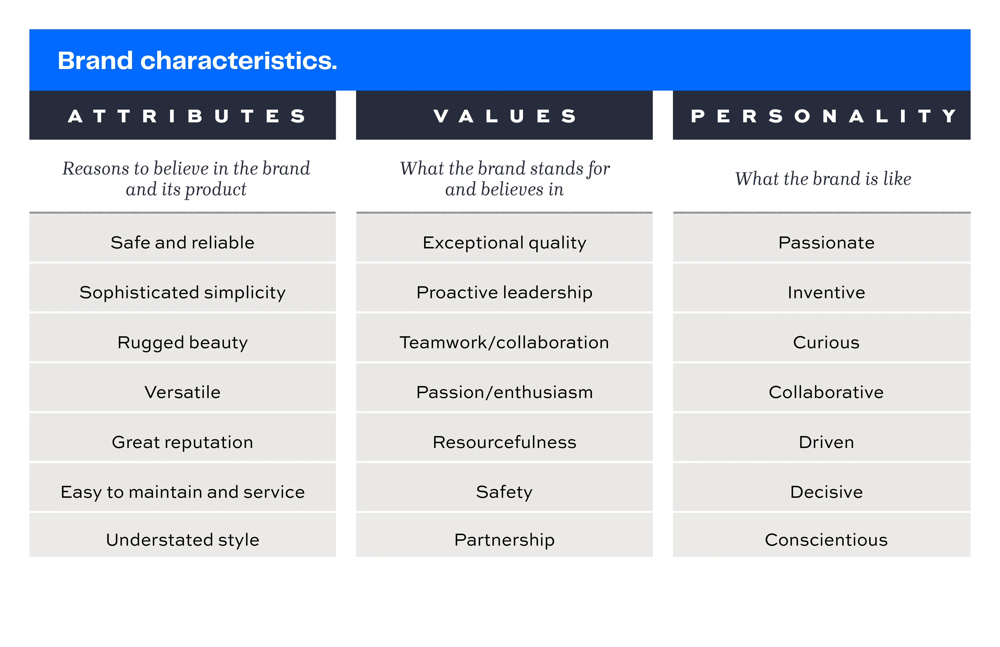
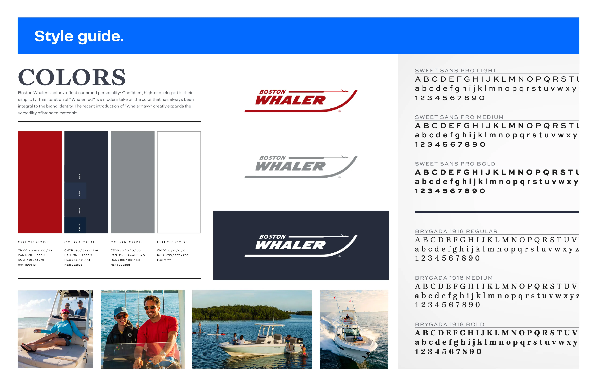
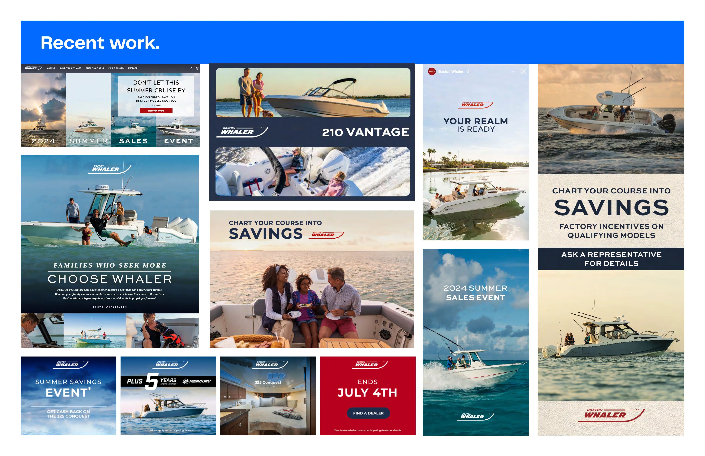
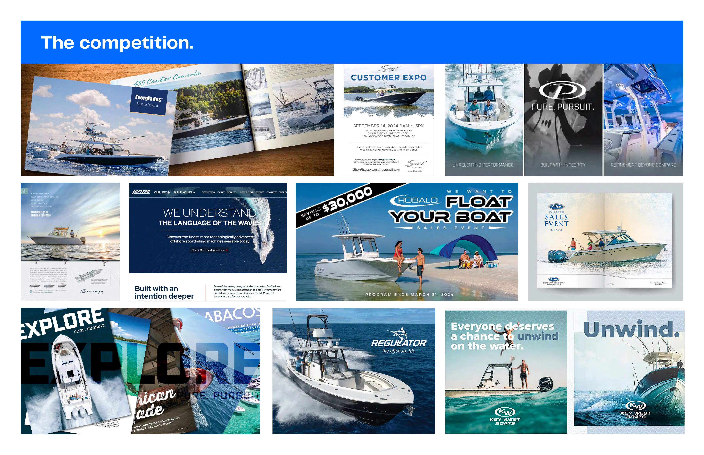
Refine rather than replace. Strengthen hierarchy, modernize the palette, establish more flexible graphic treatments and use the W mark as a more prominent, ownable brand asset.
Four designers explored distinct expressions of the same strategic brief. The concepts are shown at equal scale because the value of this phase came from comparison: each direction tested a different balance of heritage, confidence, warmth and modernity.
The final guidelines are included as project context—not presented as my individual work. They created the foundation I later used to develop the 330 and 290 Outrage launch systems.
Open official guidelines PDF ↗This is where my role shifted from contributor to owner. I independently translated the completed brand framework into a launch system balancing capability, premium detail and an editorial product story.
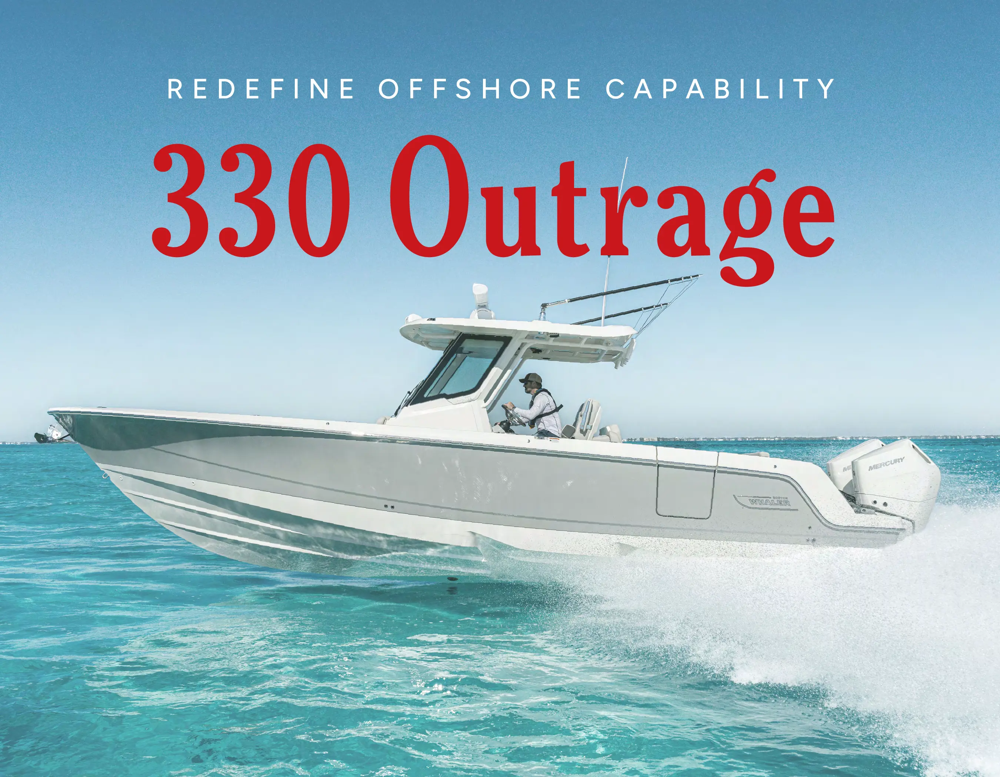
Product performance remains central, supported by confident pacing and restrained editorial composition.
Large moments establish emotion while tighter modules reveal features, craftsmanship and utility.
The framework flexes across spreads while retaining recognizable rhythm, typography and image behavior.
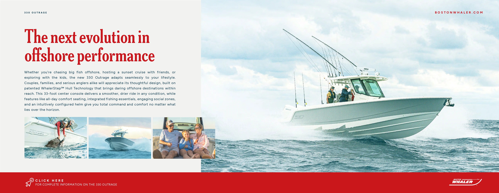
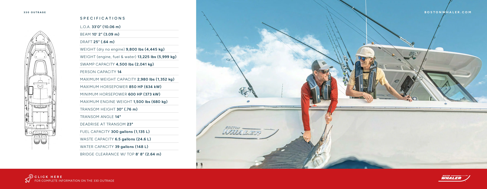
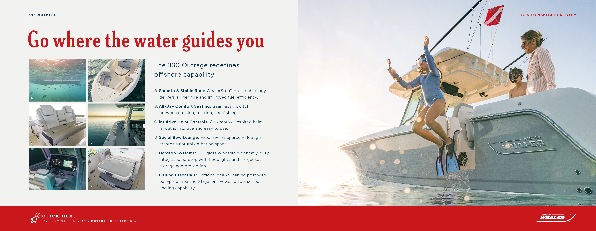
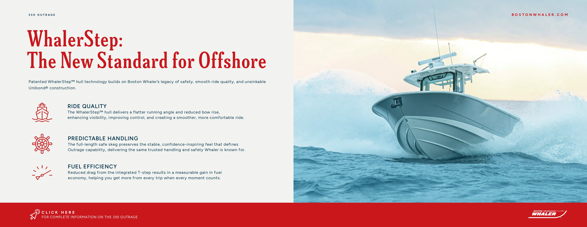
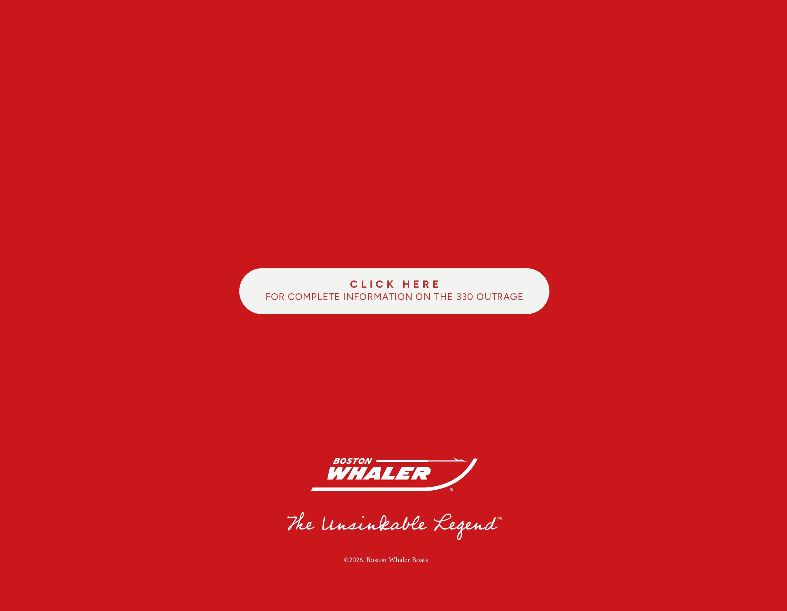
A ten-frame paid carousel uses concise feature messaging, controlled pacing and product-led imagery to introduce the 330 and 290 Outrage family.
Each 9:16 series is presented in its native mobile format. Swipe within each phone to explore the complete story sequence.
The primary thumbnail system separates the emotional launch film, hull-technology story and product walkthrough while keeping the campaign visually connected.
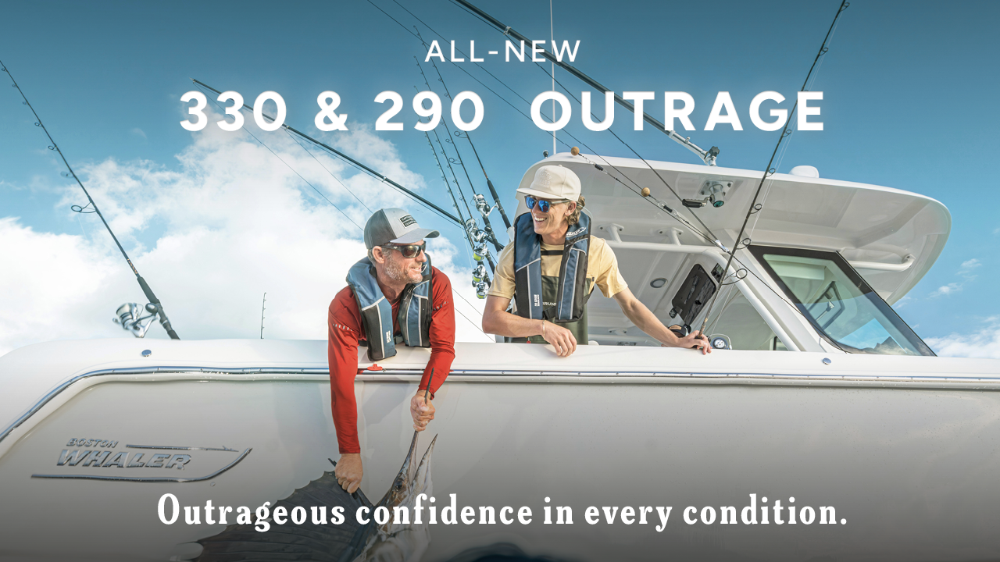
▶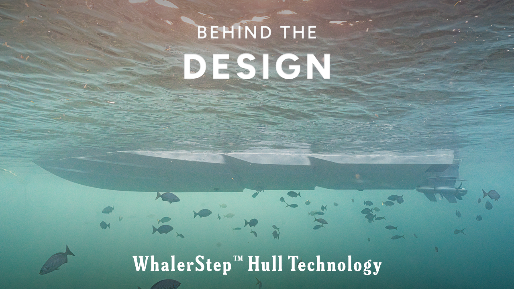
▶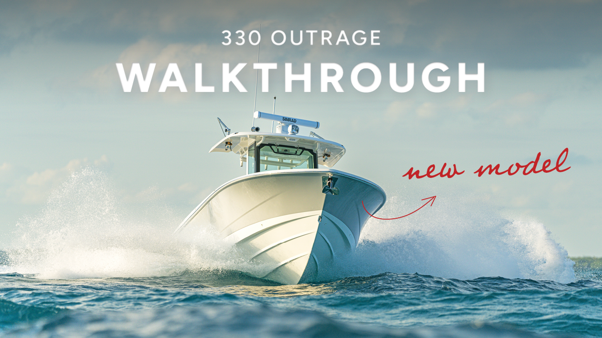
▶These testimonial thumbnails serve as supporting content, extending the campaign through family tradition, offshore confidence and the next generation of boaters.
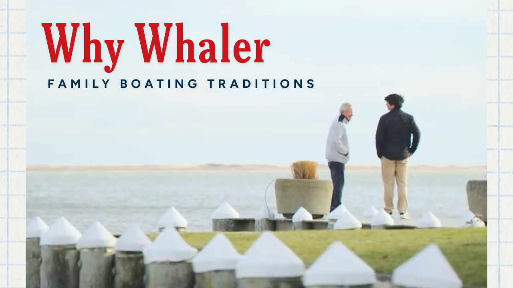
▶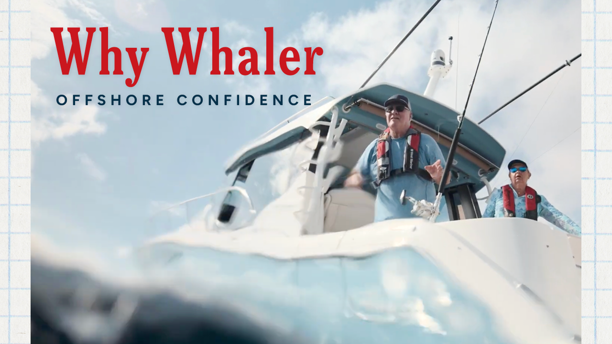
▶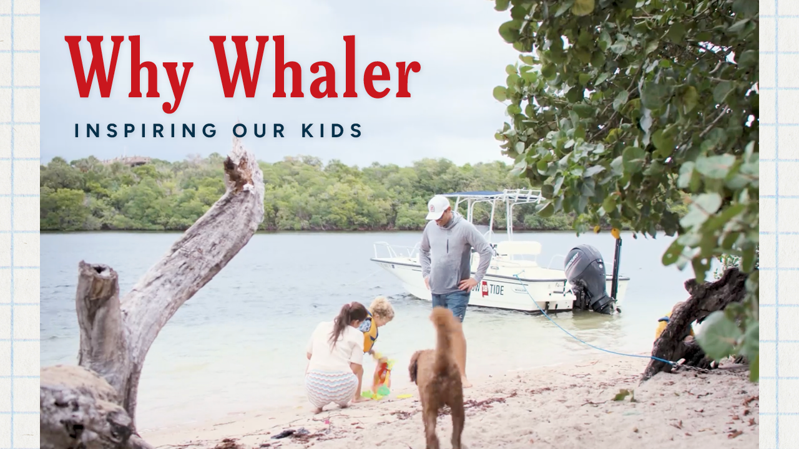
▶The 330 and 290 Outrage owner’s manuals use the same editorial typography, warm neutral field and signature red gesture to extend the launch language into product ownership.
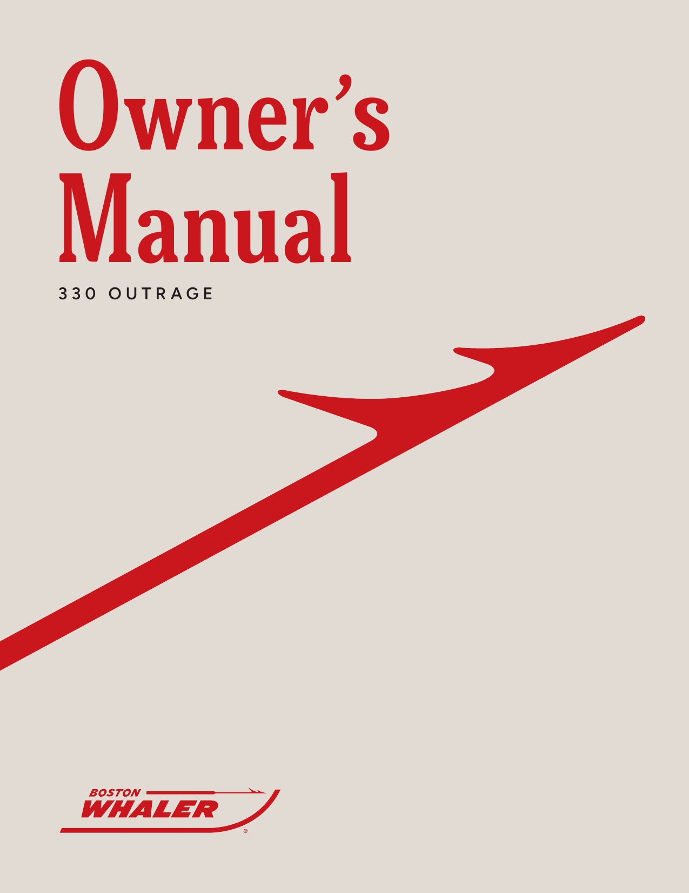
A restrained, durable extension of the launch system.
The same visual discipline translated to the second launch.
Following the 330 Outrage, I independently led the 290 Outrage launch creative and translated the refreshed brand into a focused campaign system across paid social, YouTube and print.
The challenge was not simply producing more formats. Each touchpoint needed to feel native to its channel while preserving one recognizable product story.
The rollout balanced high-impact product storytelling across mobile, video and print touchpoints while preserving one recognizable product narrative.
Each series unfolds feature-by-feature, using vertical pacing and concise messaging to turn a static product launch into a guided story.
Use the arrows, swipe, or drag to explore each carousel.
Thumbnail systems distinguish the emotional launch film from the more informative product walkthrough while keeping the visual language connected.
The printed piece condenses the launch story into a tactile format that can work on a dealer counter, at an event or in a direct customer handoff.
Editorial scale, clear feature hierarchy and a premium image-led rhythm give the piece presence without overwhelming the product.
The refreshed identity made its first public appearance at the Miami International Boat Show. These show-floor assets were a collaborative production effort rather than individually designed by me.
I provided design reference and context from the refreshed brand system, while production artists on the production team adapted and executed the final large-format applications. The work is included as supporting context to show how the identity extended into its first public reveal.
The show graphics carried the refreshed typography, palette and image behavior across legacy storytelling, new-product promotion, owner engagement and entry-level boating.
The early phase taught me how to evaluate an established brand without defaulting to novelty. The work required identifying what had become limiting while respecting the recognition and trust already built.
The 330 and 290 launches then tested whether that strategy could function under real production demands. Those launches are the clearest expression of my contribution: taking a shared framework and turning it into complete, product-specific creative systems.
An academic UI/UX exploration focused on making everyday bus travel feel easier to understand, anticipate and navigate.
Time to Bus was created during my senior year as a university capstone project. It represents an early exploration of product thinking—moving beyond visual communication to consider user needs, task flow, information hierarchy and interaction.
Bus riders often have to interpret schedules, arrival information, routes and walking time while already under pressure. The concept explored how a mobile experience could present the most important information first and help riders make faster, more confident decisions.
The project considered the journey from finding a nearby stop to understanding the next arrival and preparing to leave. The interface direction prioritized clear timing, recognizable routes and a focused hierarchy rather than exposing every transit detail at once.
Define the commuter problem and the moments of uncertainty.
Map information and prioritize the actions needed during a trip.
Develop user flows and early interface directions.
Translate the system into a consistent mobile UI concept.
Original images from the 2020 senior capstone project, shown in presentation order.


The visual language reflects the period in which it was created, but the project remains important as my first structured attempt to connect research, navigation and interface design. In a future iteration, I would validate the core flow with current riders, account for accessibility and service disruptions, and rebuild the interface using a contemporary component system.